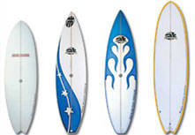

Surfboards
Surfboards are elongated platforms used in the sport of surfing. They are relatively light, but strong enough to support an individual standing on them while riding a breaking wave. Like the sport itself, they were invented in Hawaii, where they were known as Papa he‘e nalu in the Hawaiian language, usually made of wood from local trees, such as koa, and were often over 15 feet (5 m) in length and extremely heavy.[1] Major advances over the years include the addition of one or more fins on the bottom rear of the board to improve directional stability, and numerous improvements in materials and shape. Modern surfboards are made of polyurethane or polystyrene foam covered with layers of fiberglass, cloth and polyester or epoxy resin. The end result is a light and strong surfboard that is buoyant and maneuverable.
Balsa Board
The history of using balsa as a material for surfboard making goes back to the Hawaiians but really hits off in the late 1930s. Being light and strong, balsa wood was long considered a perfect material for surfboards. However, shapers could not use this fragile wood to make entire surfboards until after WW2 when fiberglass was invented. The advantages of balsa wood boards is that they are a lot lighter, more buoyant and therefore easier to handle. These boards did have some disadvantages, however, because they were not as sturdy as the solid redwood. They are currently favoured by surfers and collectors because they are more durable than a regular surfboard, environmentally friendly and have a beautiful look. Since 1993, a partnership with Rhino Balsa (the largest balsa blank manufacturer of balsa boards) has brought back memories of an era when boards were made of wood. They are now considered more art than a surfboard these are more often on display in the living room than in the garage.
Egg
Modern hybrid boards are usually 6 feet to 8 feet 6 inches (1.8–2.3 m) in length with a more rounded profile and tail shape. Surfed in smaller waves with any fin set up. They are more about having fun than high performance or tricks. They can be easier to ride for beginning surfers and generally perform well in surfing conditions where the more traditional long and short boards might not.
Fish
Radically short stubby board under 6 feet (1.8 m) in length developed from kneeboards in the 1960s by Steve Lis. Other prominent Fish shapers include Skip Frye, Steve Brom, Larry Mabil, and Rich Pavel. Primarily a twin fin set up with a swallow tail shape and popular in smaller waves. Resurgence in popularity in early 2000s created by legendary surfer Tom Curren. Note, any type of board (such as shortboard or mini-longboard) can have a fish tail, and these are commonly referred to as a "fish", but they lack the other properties of a fish as listed here.
Fun Board
The funboard combines elements of both shortboards and longboards and are generally midsized, usually 7 to 8 feet (2.1 to 2.4 m). The funboard's design allows waves to be caught more easily than a shortboard, yet with a shape that makes it more maneuverable than a longboard; hence it is a popular type of surfboard, especially among beginners, or those transitioning from longboarding to the more difficult shortboarding. This makes it the best combination in most people's view due to the combination of the speed of a shortboard and the maneuverability of a longboard.
Gun
Big wave boards of length 7 to 12 feet (2.1 to 3.7 m). Thin, needle-like template with single or thruster fin set up. It usually looks like a shortboard but at a longboard size. Used at such big waves spots as Waimea Bay and Mavericks.
Longboard
The longboard is primarily a single finned surfboard with large rounded nose and length of 9 to 12 feet (2.7 to 3.7 m). Noseriders are a class of longboards which enable the rider to walk to the tip and nose ride. Also called a "Mal", which is a shortened version of Malibu, one of, if not the most popular longboard wave. Longboards (also known as Malibu boards) range 8 to 14 feet (2.4 to 4.3 m) long, or 3 feet (0.91 m) taller than the rider in overall length. Its advantage is its substantial buoyancy and planing surface, which enables most surfers using it to ride waves generally deemed too small to propel a shortboard, as well as anything else. Longboards are universally common among both beginners and skilled surfers alike. The main reason why longboards are more suitable for beginners is because of the board's size and frequency of catching waves. In the proper conditions, a skilled surfer can ride a wave standing on the nose of a longboard, and put his toes over the nose's edge. By literally putting his "toes on the nose" the surfer can "hang ten".
Quad
Quads are quick down the line but lose drive through turns. The quad is making quite a comeback over the last year, showing up everywhere from Mavs guns to small wave fishes. CJ Hobgood won the 2007 Surfbout on a Quad at lowers.
Shortboard
Since the late 1960s (when Gordon Clark found the optimum formulation of urethane foam), many of the surfboards in common use have been of the shortboard variety between five (five'o) and seven feet in length, with a pointed nose and a rounded or squarish tail, typically with three skegs (fins) but sometimes with two or as many as five. Surfers generally find a shortboard very quick to maneuver compared with other types of surfboards, but because of a lack of flotation due to the smaller size, harder to catch waves with, often requiring steeper, larger and more powerful waves and very late takeoffs, where the surfer catches the wave at the critical moment before it breaks. A bonzer is a variety of surfboard created by the Campbell Brothers with three or five fins with double concave channels. The channels create a venturi effect which guides the water off of the surface of the board through a narrowed passage, increasing its acceleration and speed.
Source:Wikipedia